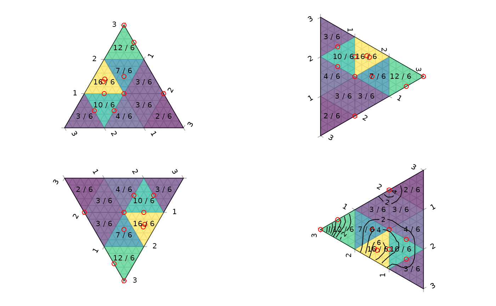
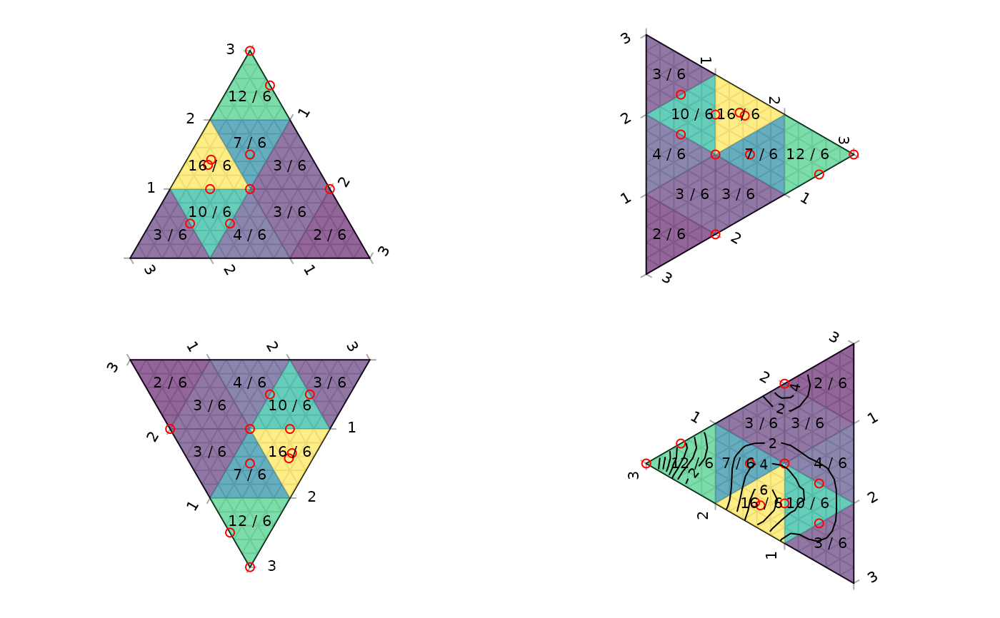

Add contours of estimated point density to a ternary plot
Source:R/Contours.R
TernaryDensityContour.RdUse two-dimensional kernel density estimation to plot contours of point density.
Usage
TernaryDensityContour(
coordinates,
bandwidth,
resolution = 25L,
tolerance = -0.2/resolution,
edgeCorrection = TRUE,
direction = getOption("ternDirection", 1L),
filled = FALSE,
nlevels = 10,
levels = pretty(zlim, nlevels),
zlim,
color.palette = function(n) hcl.colors(n, palette = "viridis", alpha = 0.6),
fill.col = color.palette(length(levels) - 1),
...
)Arguments
- coordinates
A list, matrix, data.frame or vector in which each element (or row) specifies the three coordinates of a point in ternary space. Each element (or row) will be rescaled such that its entries sum to 100.
- bandwidth
Vector of bandwidths for x and y directions. Defaults to normal reference bandwidth (see
MASS::bandwidth.nrd). A scalar value will be taken to apply to both directions.- resolution
The number of triangles whose base should lie on the longest axis of the triangle. Higher numbers will result in smaller subdivisions and smoother colour gradients, but at a computational cost.
- tolerance
Numeric specifying how close to the margins the contours should be plotted, as a fraction of the size of the triangle. Negative values will cause contour lines to extend beyond the margins of the plot.
- edgeCorrection
Logical specifying whether to correct for edge effects (see details).
- direction
(optional) Integer specifying the direction that the current ternary plot should point: 1, up; 2, right; 3, down; 4, left.
- filled
Logical; if
TRUE, contours will be filled (using.filled.contour().).- nlevels, levels, zlim, ...
parameters to pass to
contour().- color.palette
parameters to pass to
.filled.contour().- fill.col
Sent as
colparameter to.filled.contour(). Computed fromcolor.paletteif not specified.
Value
TernaryDensityContour() invisibly returns a list containing:
x,y: the Cartesian coordinates of each grid coordinate;z: The density at each grid coordinate.
Details
This function is modelled on MASS::kde2d(), which uses
"an axis-aligned bivariate normal kernel, evaluated on a square grid".
This is to say, values are calculated on a square grid, and contours fitted
between these points. This produces a couple of artefacts.
Firstly, contours may not extend beyond the outermost point within the
diagram, which may fall some distance from the margin of the plot if a
low resolution is used. Setting a negative tolerance parameter allows
these contours to extend closer to (or beyond) the margin of the plot.
Individual points cannot fall outside the margins of the ternary diagram,
but their associated kernels can. In order to sample regions of the kernels
that have "bled" outside the ternary diagram, each point's value is
calculated by summing the point density at that point and at equivalent
points outside the ternary diagram, "reflected" across the margin of
the plot (see function ReflectedEquivalents). This correction can be
disabled by setting the edgeCorrection parameter to FALSE.
A model based on a triangular grid may be more appropriate in certain situations, but is non-trivial to implement; if this distinction is important to you, please let the maintainers known by opening a Github issue.
See also
Other contour plotting functions:
ColourTernary(),
TernaryContour(),
TernaryPointValues()
Author
Adapted from MASS::kde2d() by Martin R. Smith
Examples
# Generate some example data
nPoints <- 400L
coordinates <- cbind(abs(rnorm(nPoints, 2, 3)),
abs(rnorm(nPoints, 1, 1.5)),
abs(rnorm(nPoints, 1, 0.5)))
# Set up plot
oPar <- par(mar = rep(0, 4))
TernaryPlot(axis.labels = seq(0, 10, by = 1))
# Colour background by density
ColourTernary(TernaryDensity(coordinates, resolution = 10L),
legend = TRUE, bty = "n", title = "Density")
# Plot points
TernaryPoints(coordinates, col = "red", pch = ".")
# Contour by density
TernaryDensityContour(coordinates, resolution = 30L)
 # The following demonstrates the behaviour of the density estimates when
# points fall on boundaries of the triangular grid cells; text denotes the
# number of points within the cell, with cells straddling _n_ cells
# contributing 1/_n_ of a point to each cell straddled.
coordinates <- list(middle = c(1, 1, 1),
top = c(3, 0, 0),
belowTop = c(2, 1, 1),
leftSideSolid = c(9, 2, 9),
leftSideSolid2 = c(9.5, 2, 8.5),
right3way = c(1, 2, 0),
rightEdge = c(2.5, 0.5, 0),
leftBorder = c(1, 1, 4),
topBorder = c(2, 1, 3),
rightBorder = c(1, 2, 3)
)
par(mfrow = c(2, 2), mar = rep(0.2, 4))
TernaryPlot(grid.lines = 3, axis.labels = 1:3, point = "up")
values <- TernaryDensity(coordinates, resolution = 3L)
ColourTernary(values)
TernaryPoints(coordinates, col = "red")
text(values[1, ], values[2, ], paste(values[3, ], "/ 6"), cex = 0.8)
TernaryPlot(grid.lines = 3, axis.labels = 1:3, point = "right")
values <- TernaryDensity(coordinates, resolution = 3L)
ColourTernary(values)
TernaryPoints(coordinates, col = "red")
text(values[1, ], values[2, ], paste(values[3, ], "/ 6"), cex = 0.8)
TernaryPlot(grid.lines = 3, axis.labels = 1:3, point = "down")
values <- TernaryDensity(coordinates, resolution = 3L)
ColourTernary(values)
TernaryPoints(coordinates, col = "red")
text(values[1, ], values[2, ], paste(values[3, ], "/ 6"), cex = 0.8)
TernaryPlot(grid.lines = 3, axis.labels = 1:3, point = "left")
values <- TernaryDensity(coordinates, resolution = 3L)
ColourTernary(values)
TernaryPoints(coordinates, col = "red")
text(values[1, ], values[2, ], paste(values[3, ], "/ 6"), cex = 0.8)
TernaryDensityContour(t(vapply(coordinates, I, double(3L))),
resolution = 24L, tolerance = -0.02, col = "orange")

# Reset plotting parameters
par(oPar)
# The following demonstrates the behaviour of the density estimates when
# points fall on boundaries of the triangular grid cells; text denotes the
# number of points within the cell, with cells straddling _n_ cells
# contributing 1/_n_ of a point to each cell straddled.
coordinates <- list(middle = c(1, 1, 1),
top = c(3, 0, 0),
belowTop = c(2, 1, 1),
leftSideSolid = c(9, 2, 9),
leftSideSolid2 = c(9.5, 2, 8.5),
right3way = c(1, 2, 0),
rightEdge = c(2.5, 0.5, 0),
leftBorder = c(1, 1, 4),
topBorder = c(2, 1, 3),
rightBorder = c(1, 2, 3)
)
par(mfrow = c(2, 2), mar = rep(0.2, 4))
TernaryPlot(grid.lines = 3, axis.labels = 1:3, point = "up")
values <- TernaryDensity(coordinates, resolution = 3L)
ColourTernary(values)
TernaryPoints(coordinates, col = "red")
text(values[1, ], values[2, ], paste(values[3, ], "/ 6"), cex = 0.8)
TernaryPlot(grid.lines = 3, axis.labels = 1:3, point = "right")
values <- TernaryDensity(coordinates, resolution = 3L)
ColourTernary(values)
TernaryPoints(coordinates, col = "red")
text(values[1, ], values[2, ], paste(values[3, ], "/ 6"), cex = 0.8)
TernaryPlot(grid.lines = 3, axis.labels = 1:3, point = "down")
values <- TernaryDensity(coordinates, resolution = 3L)
ColourTernary(values)
TernaryPoints(coordinates, col = "red")
text(values[1, ], values[2, ], paste(values[3, ], "/ 6"), cex = 0.8)
TernaryPlot(grid.lines = 3, axis.labels = 1:3, point = "left")
values <- TernaryDensity(coordinates, resolution = 3L)
ColourTernary(values)
TernaryPoints(coordinates, col = "red")
text(values[1, ], values[2, ], paste(values[3, ], "/ 6"), cex = 0.8)
TernaryDensityContour(t(vapply(coordinates, I, double(3L))),
resolution = 24L, tolerance = -0.02, col = "orange")

# Reset plotting parameters
par(oPar)